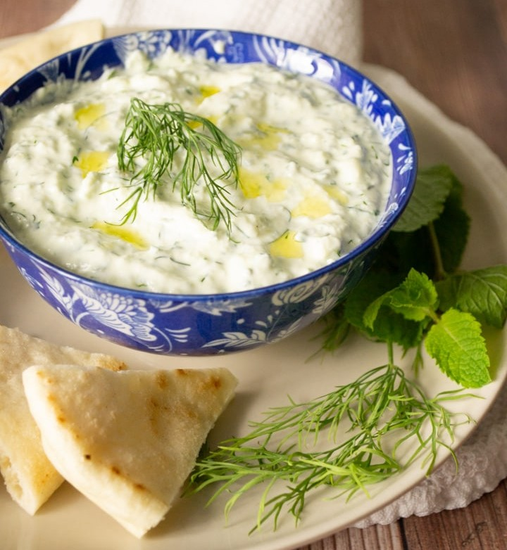

Tzatziki Sauce

Description
This yoghurt and cucumber sauce, used widely in Greece, Turkey and the Middle East,
is great for cooling spiced falafel and meats. It and its variations are also known as
jajeek, taratur, and cacik, amongst others.
Ingredients
- 2 large cucumbers
- 1 teaspoon salt
- 1 large lemon or 2 tablespoons of lemon juice
- 1 large clove of garlic
- 16 ounces of Greek style yoghurt
- 2 tablespoons olive oil
Steps
- Chop cucumbers into 1/4 inch pieces and place in strainer. Toss with salt
and let sit for 30 minutes to 1 hour in order to drain liquid. A cheese cloth may be used
in place of a strainer.
- Using a blender, mixer or food processor, mix all ingredients until smooth.
- Refrigerate for a minimum of 2 to 4 hours before serving.
Return to recipe home